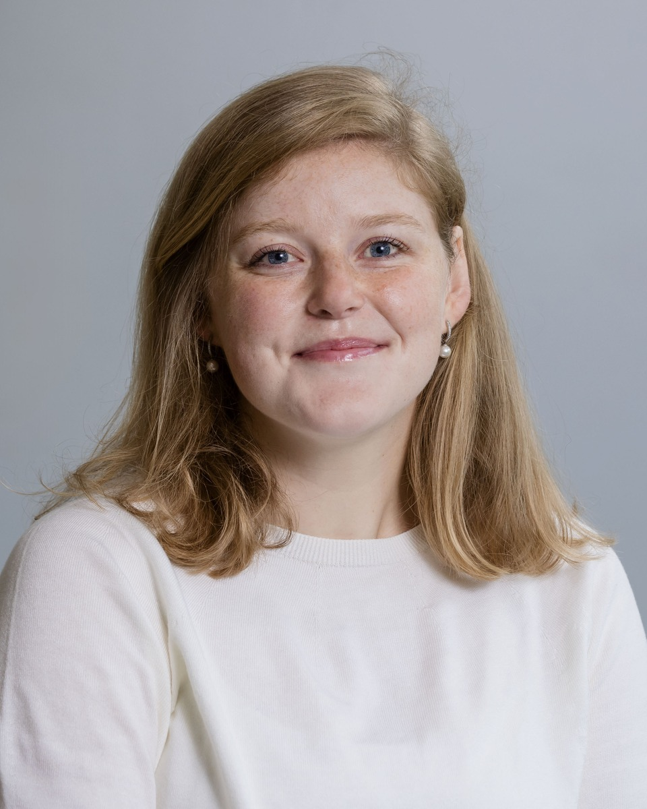

Charlotte Cambier van Nooten
Postdoctoral Researcher · Data Science · iCIS, Radboud University

I research machine learning for weather and energy systems. I am a postdoc in the Data Science group at the Institute for Computing and Information Sciences (iCIS), Radboud University, Nijmegen. Within AI FlexLab (NGF, AIC4NL), I work on AI-based load forecasting for the Dutch energy grid. I focus on hard cases such as extreme weather, grid incidents, and renewable variability, with an emphasis on uncertainty quantification.
My PhD, Grow with the Flow: Scalable Graph Neural Networks for Energy Grid Reliability, developed graph neural networks for assessing whether medium-voltage cables are n-1 secure directly from grid topology, in close collaboration with Alliander and the AI for Energy Grids Lab (ICAI). This includes deep ensembles for uncertainty quantification, edge-centric GNNs, endpoint symmetry in edge updates, and adaptive rewiring.
Before that, I worked on precipitation nowcasting of high-intensity rainfall with deep generative models, together with KNMI. I am a member of AIMET-NL, the Dutch community for AI in weather forecasting and meteorology.
I am particularly interested in the intersection of energy, weather, and climate: as the energy system electrifies and relies more on wind and solar, both supply and demand become increasingly weather-driven, and a changing climate makes the extremes that stress the grid more frequent. My research interests include graph neural networks, uncertainty quantification, load forecasting, nowcasting, and machine learning for weather and climate impacts on the energy system.
selected publications
publications
- Energy & AI
- IET GTD
- ICML WSS
- Stat. Med.A Bayesian Spatiotemporal Model for Joint Estimation of Brain Activation and Connectivity in fMRI StudiesP. Naseri, Y. Shapovalova, I. G. Bucur, C. Cambier van Nooten, G. Valente, and T. HeskesStatistics in Medicine, 45(20–22), e70712
- arXiv
- ReviewWhere Is the Learning Bottleneck? Diagnosing Multimodal Heavy-Rain Nowcasting on a Transformer BackboneY. Shapovalova, C. Cambier van Nooten, and K. WhanUnder review
- ReviewEdge Classification in Power Grids: A Comparative Study of Graph RepresentationsX. Wang, C. Cambier van Nooten, and A. LucicUnder review
- WPImproving Clinical Predictive Tasks with Ensemble Graph Neural Networks and Sequential DecodingS. Mehryar, C. Cambier van Nooten, Y. Shapovalova, and M. DumontierWorking paper
- Appl. Energy
- CIREDGNN Deep Ensembles for N-1 Contingency DecisionsC. Cambier van Nooten, T. van de Poll, T. Heskes, and Y. ShapovalovaCIRED 2025, Geneva, pp. 2435–2439code
- EGUImproving Precipitation Nowcasting Using Deep Generative Models: A Case-Study and Experiences in R2OK. Whan, C. Cambier van Nooten, M. Schmeits, J. Wijnands, K. Schreurs, et al.EGU General Assembly 2024, Vienna (abstract)
- AIESC. Cambier van Nooten, K. Schreurs, J. S. Wijnands, H. Leijnse, M. Schmeits, K. Whan, and Y. ShapovalovaArtificial Intelligence for the Earth Systems, 2(4), e230017doi
- RSERS. Y. Teng, C. Cambier van Nooten, J. M. van Doorn, A. Ottenbros, M. A. J. Huijbregts, and J. J. JansenRenewable and Sustainable Energy Reviews, 186, 113662doi
talks
Oral presentations
- 2025De betrouwbaarheid van het energienet — Provinciale Statendag
- 2025Deep generative models for precipitation nowcasting in the Netherlands — AIMET-NL, Texel
- 2025GNN deep ensembles for N-1 contingency decisions — CIRED 2025, Geneva
- 2025Machine learning for the energy sector — Women in AI for Energy days
- 2024Uncertainty quantification using GNN deep ensembles — ELLIS Day, Radboud University
- 2024Graph isomorphic networks for the reliability of the energy grid — Research Centre Alliander; Alliander–Radboud–RTE Liège; TU Delft GNN Workshop
- 2023GNNs for the reliability of the MV energy grid — DTU PES Summer School; Alliander webinar; TU Delft GNN Workshop
- 2022Capturing grid topology in machine learning models — Enigma: RTE–Alliander
- 2022Deep generative models for precipitation nowcasting — IEPG ML Forum, TU Delft
Posters
- 2026Endpoint symmetry for edge updates — ICML 2026 WSS Workshop, Seoul
- 2025Deep generative models for precipitation nowcasting — AIMET-NL, Texel
- 2025GNN deep ensembles for N-1 contingency decisions — CIRED 2025, Geneva; CHARGE course
- 2024Uncertainty quantification using GNN deep ensembles — Learning on Graphs 2024
- 2024GNNs for reliability decisions in the energy grid — ICAI Day
- 2023Graph isomorphic networks for the reliability of the energy grid — LoG 2023; ELLIS Day, TU Delft
- 2023GNNs for the reliability of the MV energy grid — DTU PES Summer School; ICAI Day
teaching
MSc supervision
- 2026Xue Wang (UvA)Edge-centric classification using subgraph GNNs · with A. Lucic
- 2025Jeroen van der PoelOptimising the data generation pipeline for GNNs in energy grid classification · with Y. Shapovalova
- 2024 – nowPrecipitation nowcasting projectsMats Robben, Pelle Kools, and Sietze van der Vinne
- 2023Nathan GoldenEdge classification using GNNs for n-1 assessment · with Y. Shapovalova
Courses
- 2022 – nowTA, Statistical Machine LearningRadboud University
- 2024IAAIP, Interdisciplinary Advanced AI ProjectTU Delft
- 2023TA, Machine Learning in PracticeRadboud University
- 2016TA, Calculations and LogisticsAmsterdam University of Applied Sciences
cv
Positions
- 2026 – nowPostdoctoral Researcher, Data ScienceRadboud University · iCIS · AI FlexLab (NGF, AIC4NL)
- 2022 – 2026PhD Candidate, Data ScienceRadboud University · iCIS · AI for Energy Grids Lab (ICAI)
- 2022Research Intern, MSc thesisRadboud University · precipitation nowcasting with KNMI radar data
- 2021 – 2022Data Science InternAlliander · short-term load forecasting on OpenSTEF
- 2019Statistics Intern, BSc thesisDe Nederlandsche Bank
Education
- 2022 – 2026PhD, Data ScienceRadboud University Nijmegen
- 2020 – 2022MSc Data Science (Computing Science)Radboud University Nijmegen
- 2019 – 2020Pre-Master Data ScienceRadboud University Nijmegen
- 2017 – 2018Pre-Master Business AnalyticsVrije Universiteit Amsterdam
- 2015 – 2019BSc Applied MathematicsAmsterdam University of Applied Sciences
Service
Reviewer: Applied Energy, Applied Intelligence, Advances in Atmospheric Sciences, Journal of Hydrometeorology, AI for the Earth Systems, Geophysical Research Letters.
Organised: GNN Workshop Alliander – Radboud – RTE Liège.
Member: AIMET-NL (communication).
Skills
Python, PyTorch, TensorFlow, SQL, R, LaTeX, Java, Spark · Dutch (native), English (C2), French and German (basic).